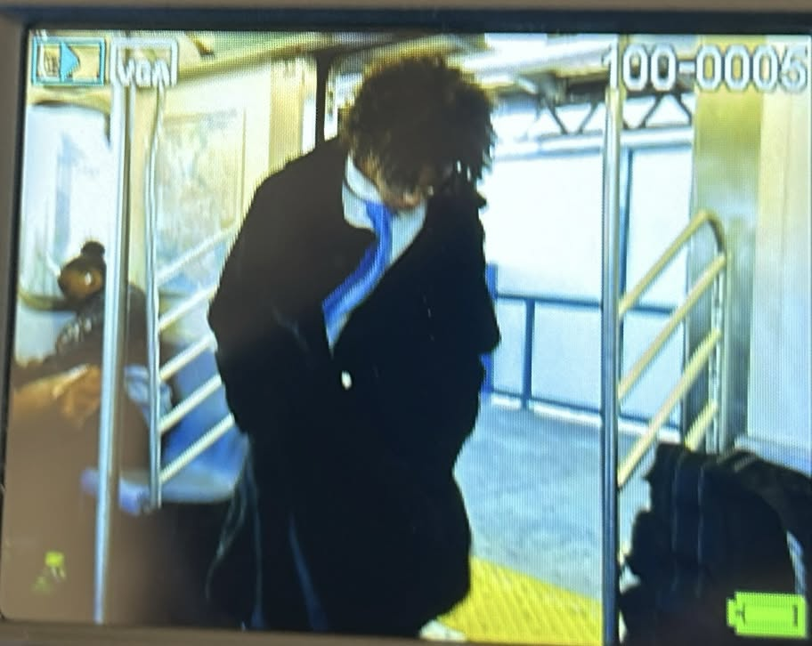

NEW YORK · CREATIVE & CURIOUS
Hi, I’m Ian.
Aspiring Web Developer
& Urban Grower
A writer and filmmaker at heart, learning to build websites and grow food. I love nature and figuring out how creative ideas can turn into something useful.
Explore my projects
What I’m learning
The foundations I’m putting into practice.
HTML + CSS
Structuring pages, styling text, and arranging content with Flexbox.
Website deployment
Publishing simple sites and checking that they work online.
Hydroponic growing
Learning how lettuce can grow in nutrient-rich water, without soil.
ALSO PART OF ME / Writing · Filmmaking · Creative thinking
A little of what I’m making

01 / WEB DEVELOPMENT
My digital business card
A simple introduction built with HTML and CSS while learning spacing, images, and Flexbox.
See all projectsLet’s make something useful.
I’m interested in beginner opportunities where I can keep learning, contribute, and bring a creative point of view.
rozeyway@gmail.com